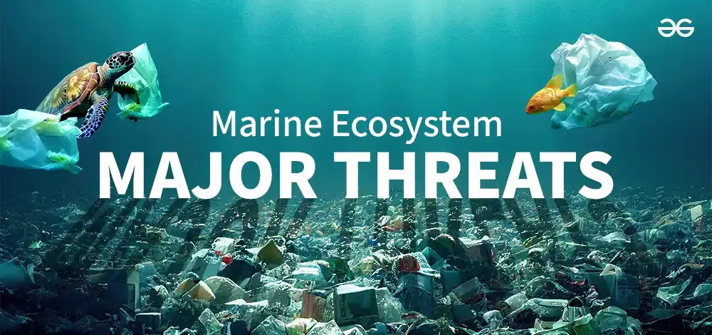
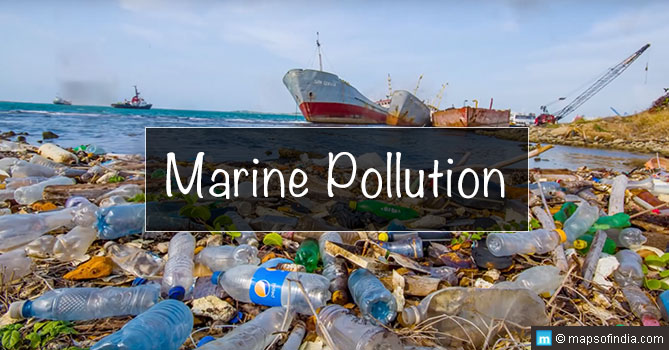

Threats to Marine Ecosystem
Introduction
Marine ecosystems include a wide range of environments, from the bright surface waters to the shadowy ocean floor. The incredible diversity of life found in these ecosystems includes anything from massive whales to small plankton. In addition to providing food and resources for billions of people, they are home to some of the most unusual and fascinating animals on Earth and are essential in controlling the planet's climate. The interdependent and delicate marine ecosystems are under threat from human activities including pollution, overfishing, and climate change. For the sake of the future generations and the health of our world, it is imperative that we comprehend and protect these ecosystems.
Pollution
Globally, marine ecosystem stability and health are seriously threatened by marine pollution. It includes all types of pollutants that end up in the ocean, such as chemical pollutants, oil spills, and plastic waste. The many forms of marine pollution are explained in detail and given examples below:
Plastic Pullution

The accumulation of plastic trash, which can range from tiny plastic particles to substantial floating rubbish patches, has resulted in a widespread issue known as plastic pollution in the oceans.
For instance, the Great Pacific Garbage Patch, which is mostly made up of plastics, is one of the biggest collections of marine waste and is situated between Hawaii and California.
It draws attention to the extent of plastic pollution around the world and its negative impacts on marine life.
Chemical Pullution
Chemical contaminants, including heavy metals, pesticides, and pharmaceuticals, damage marine habitats as a result of industrial, agricultural, and urban runoff.
For instance. Algal blooms, oxygen deprivation, and toxicity to marine creatures can result from pesticides and fertilizers carried by runoff from agricultural fields into rivers and finally the ocean.